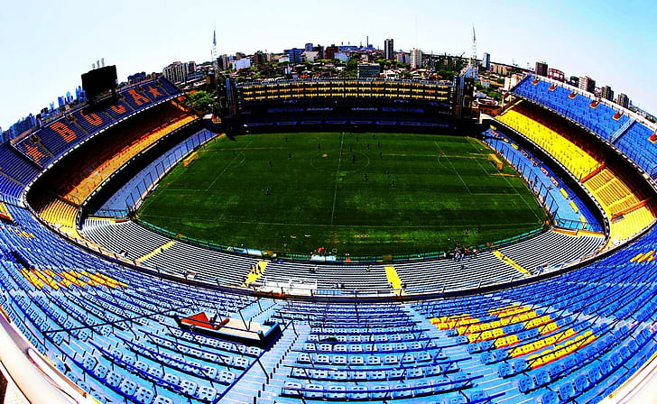

Historia de Boca Juniors
El Club Atlético Boca Juniors fue fundado el 3 de abril de 1905 por cinco inmigrantes italianos que vivían en el barrio de La Boca. Sin siquiera imaginarlo, estos cinco jóvenes escribieron los primeros párrafos de la historia del club más popular de la Argentina.
Boca Juniors jugó en la liga local y en la segunda división de fútbol amateur, hasta que ascendieron a la primera división en 1913. Ganó seis campeonatos amateurs en 1919, 1923, 1924, 1926 y 1930. Tras la profesionalización del fútbol en Argentina, Boca ganó el primer título en 1931.
Su histórico rival es el Club Atlético River Plate, con quien juega el famoso Superclásico, un evento que, según el periódico inglés The Observer, cuando se juega en la Bombonera, se encuentra entre los 50 espectáculos deportivos que hay que ver antes de morir.
Boca Juniors ganó 18 títulos internacionales, entre los que se incluyen 6 Copas Libertadores, 4 Recopas Sudamericanas, 3 Copas Intercontinentales, 2 Copas Sudamericanas, 1 Copa Oro, 1 Supercopa Sudamericana y 1 Supercopa Masters, además de los 23 títulos locales.
La hinchada y el club tienen varios apodos:
Los Xeneixes: éste apodo se debe a la gran colonia genovesa que vivía en el barrio de La Boca cuando se fundó el club. Traducido significa, justamente, "genovés".
La 12: se refiere al "jugador número doce". El apodo nació durante la gira europea de 1925, en la que el equipo fue acompañado por Victoriano Caffarena, un fanático boquense. Durante la gira, Caffarena ayudó al equipo en todo lo que pudo. Por este motivo, los jugadores lo nombraron el jugador número doce. Unos años más tarde, el periodista Pablo Rojas Paz sentenció que la hinchada de Boca es el jugador número doce por su incondicionalidad y entrega. Actualmente, el apodo "La 12" se utiliza para denominar a la barra brava.
La mitad más uno: debido a la popularidad del club, la hinchada de Boca se ha definido a sí misma como "la mitad más uno" (aunque, según las encuestas, los fanáticos de Boca no superan la mitad de la población de Argentina).
El Club Atlético Boca Juniors ocupa siempre un puesto en el Ranking Mundial de Clubes de IFFHS y llegó a ocupar 6 veces el puesto número uno.
Jugadores de Boca Juniors
Algunos de los jugadores más destacados que han pasado por Boca Juniors a lo largo de su historia son:
- JUAN ROMÁN RIQUELME (1996 – 2002/2007/2008 – 2014)
- DIEGO MARADONA (1981/1995 – 1997)
- MARTÍN PALERMO (1997 – 2000, 2004 – 2011)
- CARLOS TEVEZ (2001 – 2004; 2015 – 2016; 2018 – 2021)
- ÁNGEL CLEMENTE ROJAS (1963 – 1972)
- FRANCISCO VARALLO (1931 – 1939)
- GUILLERMO BARROS SCHELOTTO (1997 – 2007)
- JORGE BERMÚDEZ (1997 – 2001)
- HUGO GATTI (1976 – 1988)
- ANTONIO RATTÍN (1956 – 1970)
Estadio La Bombonera
La Bombonera es el estadio de Boca Juniors, ubicado en el barrio de La Boca en Buenos Aires. Tiene una capacidad para albergar a más de 49.000 espectadores y es uno de los estadios más emblemáticos del mundo del fútbol.
